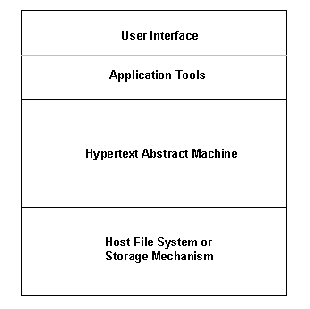

Hypermedia – Hypertext Abstract Machine
2.1 Hypertext Abstract Machine (HAM)
One of the first approaches to a generic hypertext implementation model was the Hypertext Abstract Machine (HAM), “a general purpose, transaction-based, multi-user server for a hypertext storage system.” [Campbell & Goodman, 1988]. HAM’s emphasis was on developing an appropriate storage model. It provided a general and flexible model that could be used in several, different hypertext applications. The Hypertext System Architecture based on HAM contains the following layers (see Figure 6.1):
- User Interface: A window-based interactive environment for applications to communicate with users.
- Application: The actual application which may or may not run on the same machine as the HAM.
- Hypertext Abstract Machine: An engine which manages all information about the hypertext and communicates with the application through a byte stream protocol.
- Host file system or storage system: A repository to store all the hypertext graphs or databases.

Figure 6.1: Hypertext Abstract Machine [Campbell & Goodman, 1988]
The HAM storage model consists of five major objects: graphs (networks of nodes and links containing one or more contexts), contexts (partitions of data within a graph), nodes, links, and attributes carrying semantics. The following operations could be performed on HAM objects: create, delete, destroy, change, get, filter, and special. The HAM architecture provided version control, filtering and data security. The HAM storage model has been successfully tested against systems such as Guide, Intermedia, and NoteCards.